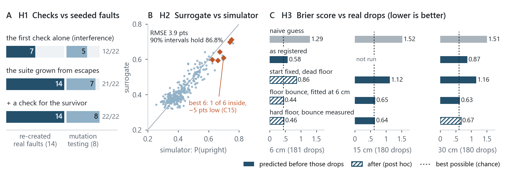

<meta charset="utf-8">
<title>Checks That Can Fail</title>
<link rel="preconnect" href="https://fonts.googleapis.com">
<link rel="preconnect" href="https://fonts.gstatic.com" crossorigin>
<link rel="stylesheet" href="https://fonts.googleapis.com/css2?family=Source+Serif+4:ital,opsz,wght@0,8..60,400;0,8..60,600;1,8..60,400&family=IBM+Plex+Sans+Condensed:wght@500;600&display=swap">
<style>
/* Draft v4 (2026-10-25): v3 with the review's changes (review-v3.md); three US Letter sheets, three pages in print. */
:root{
  --paper:#fbfbf9; --ink:#1d2328; --muted:#5a6570; --rule:#cfd5da; --accent:#24506b; --desk:#e9ecee; --tint:#e6edf2;
  --serif:"Source Serif 4",Georgia,"Times New Roman",serif;
  --sans:"IBM Plex Sans Condensed","Arial Narrow",Arial,sans-serif;
}
@media (prefers-color-scheme:dark){:root:not([data-theme="light"]){--paper:#1b2025;--ink:#e3e7ea;--muted:#9aa6b0;--rule:#36414a;--accent:#8fb8d3;--desk:#111518;--tint:#26313a;color-scheme:dark}}
:root[data-theme="dark"]{--paper:#1b2025;--ink:#e3e7ea;--muted:#9aa6b0;--rule:#36414a;--accent:#8fb8d3;--desk:#111518;--tint:#26313a;color-scheme:dark}
body{background:var(--desk);color:var(--ink);font-family:var(--serif);padding-inline:16px;padding-block:24px}
.sheet{background:var(--paper);max-width:8.5in;margin:0 auto 24px;padding:0.6in 0.7in;box-shadow:0 1px 3px rgba(0,0,0,.12);font-size:10.2pt;line-height:1.34}
h1{font-family:var(--sans);font-weight:600;font-size:18.5pt;margin:0;text-wrap:balance}
.sub{font-family:var(--sans);font-weight:500;font-size:10.8pt;color:var(--accent);margin:2px 0 5px}
.byline{font-size:9pt;color:var(--muted);border-bottom:1px solid var(--rule);padding-bottom:6px;margin-bottom:8px}
h2{font-family:var(--sans);font-weight:600;font-size:10.3pt;text-transform:uppercase;letter-spacing:.06em;color:var(--accent);margin:9px 0 3px;break-after:avoid}
p{margin:0 0 5px}
ul{margin:2px 0 5px;padding-left:1.1em}
li{margin:0 0 4px}
b,strong{font-weight:600}
.aim b:first-child,.hyp b:first-child{color:var(--accent)}
table{width:100%;border-collapse:collapse;font-size:9.2pt;margin:2px 0 5px}
th,td{text-align:left;vertical-align:top;padding:2.5px 6px;border-bottom:1px solid var(--rule)}
th{font-family:var(--sans);font-weight:600;color:var(--muted);white-space:nowrap;width:5.2em}
figure{margin:8px 0 6px;break-inside:avoid}
figure img{width:100%;display:block;background:#fff;border-radius:2px}
figcaption{font-size:8.6pt;line-height:1.3;color:var(--muted);margin-top:4px}
figcaption b{color:var(--ink)}
.summary{font-size:9.7pt;line-height:1.32;border-left:2px solid var(--accent);padding:1px 0 1px 9px;margin:0 0 6px}
.refs{font-size:8.4pt;color:var(--muted);line-height:1.28}
.refs h2{font-size:9.4pt}
.refs p{margin:0 0 1.5px;padding-left:1.6em;text-indent:-1.6em}
.ph{background:var(--tint);padding:0 3px;border-radius:2px}
.num{font-variant-numeric:tabular-nums}
@media (max-width:640px){.sheet{padding:22px 18px;font-size:11pt}}
@page{size:letter;margin:0.55in 0.66in}
@media print{
  :root{--paper:#fff;--ink:#111;--muted:#4b5560;--rule:#c9cfd4;--accent:#1f4a64;--tint:#fff;color-scheme:light}
  body{background:#fff;padding:0;margin:0}   /* v4: the default 8px body margin cost print 16px of width */
  .sheet{box-shadow:none;margin:0;padding:0;max-width:none}
  .sheet+.sheet{break-before:page}
  .ph{background:none;padding:0}
}
</style>

<section class="sheet" aria-label="Page 1">
  <h1>Checks That Can Fail</h1>
  <p class="sub">Assured AI agents and surrogate models for faster ground-system design and simulation</p>
  <p class="byline"><span class="ph">[Your name]</span>, M.S. Cybersecurity &middot; Research plan for the <span class="ph">[Org]</span> AI Research Fellow, UM-LANL SPARC &middot; October 2026</p>

  <p class="summary"><b>Summary.</b> AI agents and surrogate models can speed vehicle design, but only as far as the checks that accept their work can be trusted, and checks fail. In a two-week pilot on my robot, Scorpion, every check was itself tested: planted faults for CAD checks, the simulator for the surrogate, and real drops for the simulator. A check has been caught being wrong 19 times, never by the check itself. This plan makes it routine.</p>

  <h2>1. The challenge</h2>
  <p>The slow step in building a vehicle is not drawing a change but building and testing it. AI agents can now revise CAD, set up simulations and write the tests that judge the result in minutes, yet each change still waits on hardware: on my robot, 16 of 26 design flaws surfaced only at the bench, after printing. In this pilot, 361 hand drops took three sessions; the simulator ran 80,000 in 74 s, and a surrogate model answers in microseconds. Simulation and surrogates can replace most builds, but only if their answers can be trusted. A check that passes when it should fail sends a defect to hardware, where each one costs a reprint and a bench session; a check nobody trusts sends every design back to the bench, and the speed is lost.</p>
  <p>I propose to make that acceleration <i>assured</i>: to give AI-agent design changes, and the physics and surrogate checks that accept them, measured confidence, while keeping a same-day design, build and test loop. This is the priority because it gates every other use of AI in vehicle engineering, it can be measured, and it transfers across subsystems. It is also an assurance problem of the kind cybersecurity trains for: assume any control can be fooled, by a bug or by the system's own mistake, and test the tests.</p>

  <h2>2. Preliminary work</h2>
  <p>I have been building <b>Scorpion</b>, a tracked ground robot with a 360° pan-tilt camera head, as a platform for embodied AI since February 2025. Since July 2026 I have worked on it with an AI coding agent (Claude, by Anthropic): first its software, and since September its CAD. I build and test at the bench; the agent turns each finding into a change to code-based CAD in Python (CadQuery and signed-distance models), runs automated checks and produces print files, often the same day.</p>
  <ul>
    <li><b>Pace.</b> The pan drive went through <span class="num">11</span> design iterations in <span class="num">16</span> days, the last four on consecutive days.</li>
    <li><b>Checks.</b> Interference, assembly order, gear backlash, bearing contact, thread engagement and wire clearance; for the whole vehicle, stability, rest states after a tumble, and which part strikes first.</li>
    <li><b>Finding.</b> Ten recorded cases of a check that was itself wrong, seven of them passes that let a defect through. The fix that worked: every check ships with a <i>negative control</i>, a deliberately broken variant it must flag, which is mutation testing borrowed from software engineering [1].</li>
    <li><b>Escapes.</b> A lesson alone did not stop a fault&rsquo;s kind: a screwdriver-access rule (Sep 18) let an access fault reach the bench (Oct 3). A lesson with a check did: after Oct 3 the one assembly fault designed (Oct 11) was caught by its check before printing. What kept escaping is what no check models yet: forces (8 of 16 bench findings: friction, fit, strength, retention, material) and wire routing (5 findings).</li>
  </ul>

  <h2>3. Pilot results</h2>
  <p>To turn those anecdotes into measurements, the agent and I (below, "we") ran a two-week pilot of each aim on Scorpion in October 2026. H2&rsquo;s and H3&rsquo;s predictions were committed to version control before their tests [7], and H1&rsquo;s 22 faults before they were run; H4 is retrospective. Each experiment has a control, a broken case that must come out differently, and every number here traces to a file in the repository.</p>
  <ul>
    <li class="hyp"><b>H1. Mutation-tested checks (Aim 1).</b> We seeded <span class="num">22</span> faults into the pan drive's model, <span class="num">14</span> re-creating real failures (Fig. 1A). The first check, part-against-part interference, caught <span class="num">12</span> (7 of the 14 real ones). The suite grown since, one check for each escape, caught <span class="num">21</span>. The one survivor, a part 0.6 mm out of its grooves, became a new check: <span class="num">22</span> of 22. None of the ten checks is vacuous: each catches a fault.</li>
  </ul>
</section>

<section class="sheet" aria-label="Page 2">
  <ul>
    <li class="hyp"><b>H2. An uncertainty-gated surrogate (Aim 2).</b> A MuJoCo simulation [3] tumbled <span class="num">400</span> body shapes 200 times each, <span class="num">80,000</span> tumbles in 74 s on 20 cores, to find which shapes come to rest upright. A Gaussian process [5] trained on 120 of them predicted the other 280 with an RMS error of 3.9 percentage points, and its 90% intervals held 86.8% of the time (Fig. 1B). Asked whether each design lands upright at least 60% of the time, it answered 266 of 280 by itself, 2 of them wrongly, and sent 14 to simulation: 95% of the simulations saved. Two checks exposed its limits, and both are findings. A registered control failed: sentinel runs could not see a hidden friction change, which moved the answer by at most 4 points. And a later check found that intervals that held on average held for only 1 of the 6 best designs, all about 5 points too low: exactly where a design gets chosen.</li>
    <li class="hyp"><b>H3. Simulation against reality.</b> We printed scale models of three candidate bodies, each with a coin pocket so its centre of mass can be moved as a physical control, and I dropped them by hand <span class="num">361</span> times, from 6 and 30 cm. Each prediction is scored by its Brier score [6]: 0 is perfect, and lower is better (Fig. 1C). At 6 cm the committed predictions beat a naive guess, 0.58 against 1.29, and shifted the right way when the coins moved. That pass was partly luck. Breaking the misses down by starting position exposed a bug in how simulated drops began, and fixing it alone made the score worse (0.86). Watching drops in the simulator's viewer, I saw its default floor let bodies sink 7&ndash;17 mm on impact, which a passing audit had measured only at rest. A floor bounce fitted at 6 cm and committed before the 30 cm drops then won that blind test: 0.63 against 1.16 for the default floor (difference 0.52, 95% CI 0.40&ndash;0.64). After the fact, a hard floor with its bounce measured on 240 fps video comes close without fitting anything: 0.46 and 0.67, against a best possible near 0.44 and 0.60. A third blind test, at 15 cm from a drop stand, held: the registered primary, a hard floor with bounce 0.31, scored 0.68 against 1.12 for the default floor (difference 0.44, 95% CI 0.35&ndash;0.54); with the ball&rsquo;s measured bounce (0.39, Fig. 1C) it scored 0.64, near the best possible 0.61. At 15 and 30 cm the model still over-predicts the weight&rsquo;s effect.</li>
    <li class="hyp"><b>H4. Cycle time.</b> Reconstructed from version control and logs (retrospective), the median from a finding to a fix ready to print was 1.6 h (interquartile range 0.6&ndash;2.5 h, <i>n</i> = 20; 1.9 h for bench findings); 10 of 26 findings were caught before printing, and 5 had slipped past a check that passed. During the pilot, 17 more findings were logged as they happened, with commit times.</li>
  </ul>

  <figure>
    
    <figcaption><b>Figure 1. Pilot results.</b> (A) Seeded faults caught: the 14 re-created real failures, and the 8 invented for mutation testing, the out-of-sample test. (B) Surrogate against simulator on 280 held-out designs; orange, the 6 best designs, each predicted without its own data, against 1,000-drop reruns. (C) Brier scores against the real drops: solid bars committed before those drops, hatched after (the 6 cm floor bounce was fitted to them); dashed, the best score the drops&rsquo; own randomness allows.</figcaption>
  </figure>

  <p><b>What the pilot shows.</b> The project has now recorded <span class="num">19</span> cases of a check that was itself wrong, <span class="num">13</span> of them passes that should have failed, and <span class="num">9</span> of them during the pilot: in a CAD check suite and its controls, the drop predictions, the simulator's floor, a numerical time step and the surrogate's intervals. None was caught by the check itself. Each was exposed by something outside it: a person looking, a physical test, a cross-check, a control or a second agent, and each changed how that kind of check is done. That is the case for this plan: checks that can fail, and are shown to.</p>

</section>

<section class="sheet" aria-label="Page 3">
  <h2>4. Approach</h2>
  <p class="aim"><b>Aim 1: Mutation-tested agent workflows.</b> Grow the pilot's harness into a fault-operator library (move a part, close a clearance, swap a material, sever a joint, duplicate a body, perturb a load) that scores each check by the faults it catches. The agent delivers each change with its checks; a second agent, blind to the designer&rsquo;s reasoning, writes the mutants; and a change passes only when they reach a set mutation score. Designs, results and logs are versioned and signed: a chain of custody for AI-generated designs.</p>
  <p class="aim"><b>Aim 2: Physics, surrogates and uncertainty.</b> Couple the checks to physics-based simulation: Project Chrono for vehicle-terrain mobility and rollover [2], MuJoCo for mechanisms [3], assembly planning for whether a design goes together [8], and <span class="ph">[Org]</span> and SPARC tools where they fit. Train surrogates on simulation sweeps run on high-performance computing [4], so the agent can screen a change in seconds; send any case a surrogate is unsure of to full simulation or physical test; and check its intervals where decisions are made, not only on average. A surrogate is a check too, so it faces the same mutants. Bench data calibrates the physics, and each escape becomes a regression case and training data.</p>
  <p class="aim"><b>Aim 3: Demonstrate and measure.</b> With the Chief Scientist, choose a ground-system problem from <span class="ph">[Org]</span> and SPARC priorities, for example a sensor mast, a drive module or rollover screening. Run a controlled comparison on matched tasks: the conventional workflow, AI agents alone, and AI agents with mutation-tested, uncertainty-gated checks. Measures: time from a test finding to a verified change; faults designed per change and the share caught before hardware, which separate prevention from detection; mutation score; whether the surrogate's stated uncertainty holds; compute and engineer hours.</p>
  <h2>5. Schedule (12 months)</h2>
  <table>
    <tr><th>Months 1-2</th><td>Evaluate SPARC foundation models and codes; pick the problem; package the toolkit.</td></tr>
    <tr><th>Months 3-6</th><td>Physics coupling, surrogate training on HPC; uncertainty gating; calibration; provenance logging.</td></tr>
    <tr><th>Months 7-10</th><td>Controlled study on the selected subsystem.</td></tr>
    <tr><th>Months 11-12</th><td>Analysis, transition package, technical report and publication.</td></tr>
  </table>

  <h2>6. Deliverables, transition and partnership</h2>
  <p>An open check-and-mutation library, in Python on open formats (STEP, STL, MJCF), that drops into existing CAD and simulation pipelines; trained surrogates with their validation records; a workflow guide and a half-day course for <span class="ph">[Org]</span> engineers; a dataset of design iterations, escapes and cycle times; a technical report and a paper. I will pair <span class="ph">[Org]</span> staff with UM and LANL experts in scientific machine learning and verification, and draft at least one joint follow-on proposal. Transition succeeds when a second team runs the harness on its own vehicle without me.</p>

  <h2>7. Risks</h2>
  <ul>
    <li><b>Simulation and surrogate fidelity.</b> The pilot found both wrong in ways only outside checks exposed. Physical test stays the arbiter, and uncertainty gating limits where a surrogate may decide alone.</li>
    <li><b>Agent errors.</b> No change is accepted without passing its mutants and a human review gate.</li>
    <li><b>Check rot.</b> Libraries gather checks that stop catching faults or cry wolf (the pilot found a dead control); each keeps its mutation score and bench record, and is retired on that evidence, never silently.</li>
    <li><b>Scale.</b> Shown on a small robot so far; Aim 3 tests it on an <span class="ph">[Org]</span> subsystem, with its own tools.</li>
  </ul>

  <div class="refs">
    <h2>References</h2>
    <p>[1] Y. Jia and M. Harman, "An analysis and survey of the development of mutation testing," <i>IEEE Trans. Softw. Eng.</i>, 37(5), 2011.</p>
    <p>[2] A. Tasora et al., "Chrono: An open source multi-physics dynamics engine," <i>HPCSE 2015</i>, LNCS 9611, Springer, 2016.</p>
    <p>[3] E. Todorov, T. Erez and Y. Tassa, "MuJoCo: A physics engine for model-based control," <i>IEEE/RSJ IROS</i>, 2012.</p>
    <p>[4] G. E. Karniadakis et al., "Physics-informed machine learning," <i>Nature Reviews Physics</i>, 3, 2021.</p>
    <p>[5] C. E. Rasmussen and C. K. I. Williams, <i>Gaussian Processes for Machine Learning</i>, MIT Press, 2006.</p>
    <p>[6] G. W. Brier, "Verification of forecasts expressed in terms of probability," <i>Monthly Weather Review</i>, 78(1), 1950.</p>
    <p>[7] B. A. Nosek, C. R. Ebersole, A. C. DeHaven and D. T. Mellor, "The preregistration revolution," <i>PNAS</i>, 115(11), 2018.</p>
    <p>[8] Y. Tian et al., "Assemble Them All: Physics-based planning for generalizable assembly by disassembly," <i>ACM TOG</i> 41(6), 2022.</p>
  </div>
</section>
